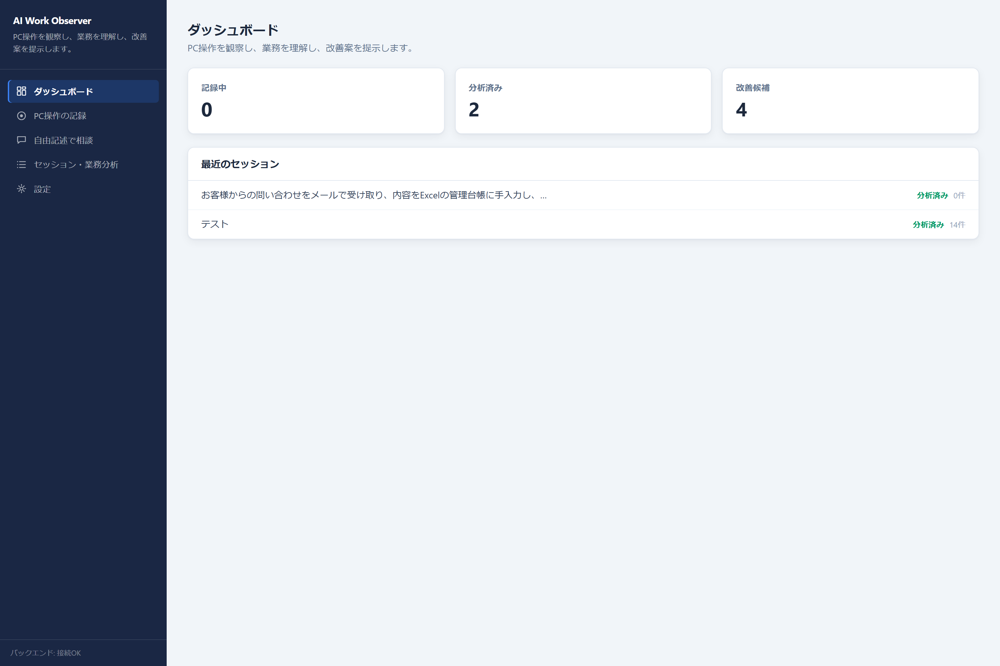
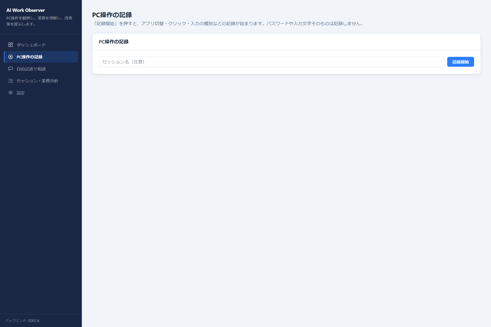
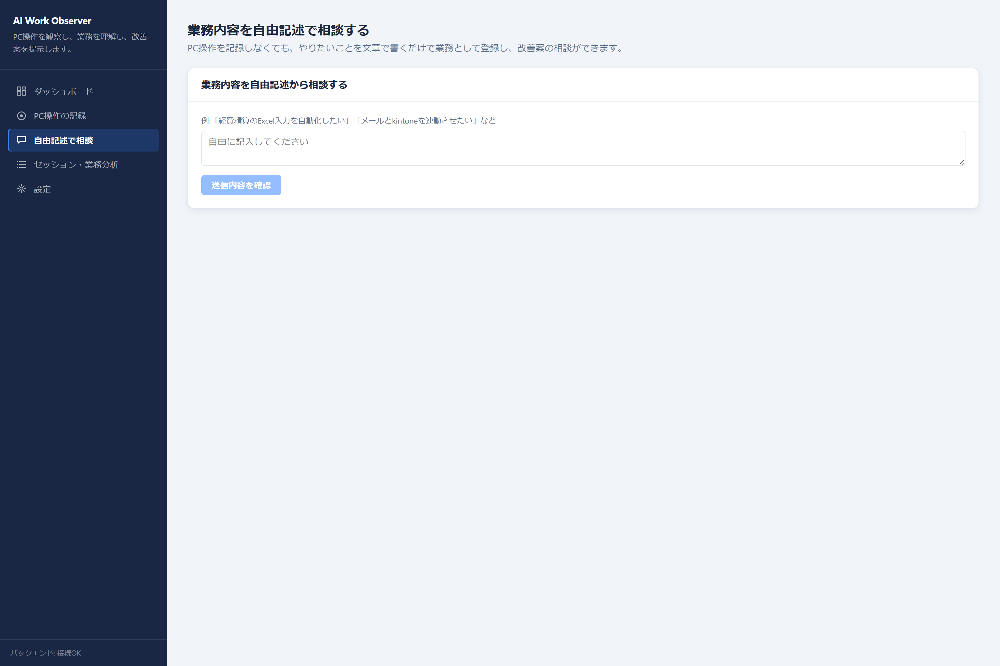
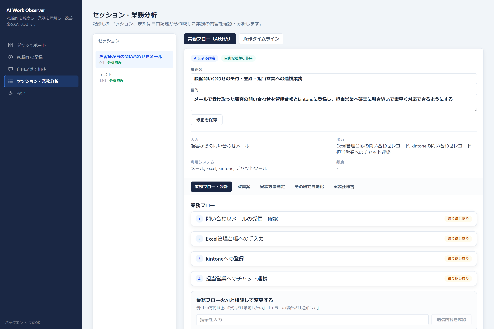
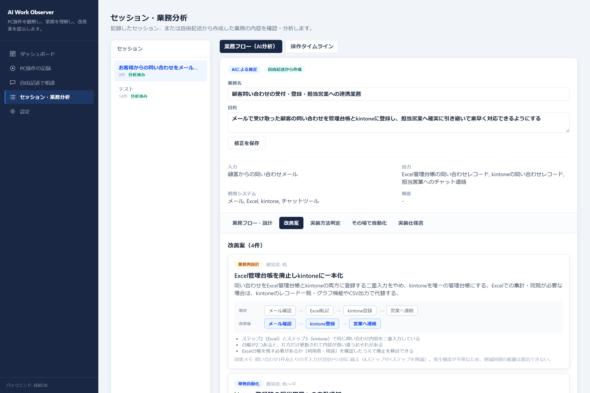
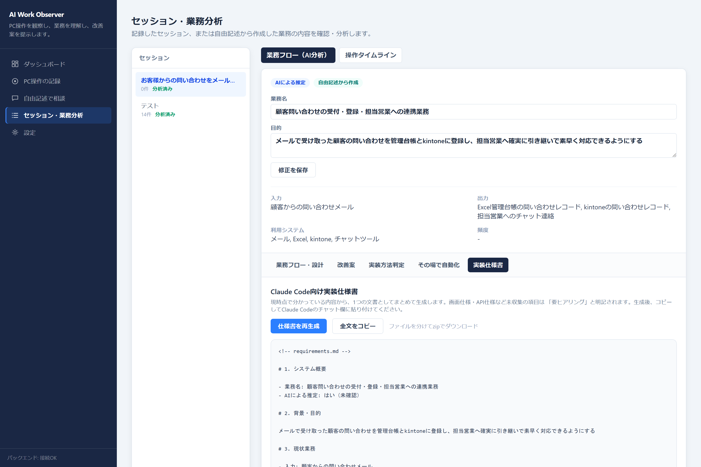
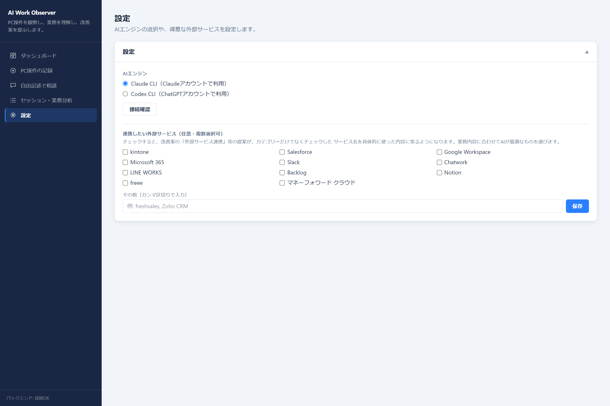

日々のPC操作（アプリの切り替え・クリック・入力の種別）をローカルに記録し、AIが「何のための、どういう業務か」を整理します。簡単な作業はその場で自動化アプリを生成し、複雑な業務はClaude Code向けの実装仕様書まで作成します。
AI Work Observerは、使う人によって2つの役割を持ちます。
業種・職種を問わず、バックオフィス・営業/マーケティング・カスタマー対応・製造/物流・開発/情シスなど、幅広い業務でよく聞くお悩みです。
毎日同じExcel・システムへの転記作業に時間を取られている
PC操作を見せるだけで、繰り返し作業をAIが自動で発見します
業務が属人化していて、どこに無駄があるか自分でも整理できていない
AIが業務フローを業務名・目的・入力/出力まで言語化。誰が見ても分かる形になります
自動化ツールを調べても、結局どれが自分の業務に合うのか分からない
「自動化ありき」にせず、廃止・簡略化・既存サービス活用まで含めて改善案を出します
改善したい気持ちはあるが、エンジニアがおらず相談先がない
簡単な業務はその場で自動化アプリを生成、複雑な業務はClaude Code向け実装仕様書まで用意します
SHIKOU × AI自身も、お客様への業務改善のご提案にAI Work Observerを活用しています。個人の業務改善だけでなく、提案・営業活動のツールとしてもお使いいただけます。
お客様自身も「どこに無駄があるか」を実は把握できていないことが多い
PC操作を記録するだけで、お客様自身も気づいていない非効率な作業まであぶり出せます。提案の説得力が変わります
お客様に業務改善を提案したいが、ヒアリングだけでは現場の実態や無駄が見えにくい
PC操作を記録させていただくだけで、AIが現状の業務フローを可視化。ヒアリングの手間を大きく減らせます
提案のたびに、現状→改善後のフロー図やヒアリングメモをゼロから作っている
改善案と一緒に現状/改善後のフロー比較が自動で生成されるので、そのまま提案資料のたたき台になります
「自動化しましょう」という提案だけでは響かない。説得力のある根拠が欲しい
自動化ありきにせず、廃止・簡略化・外部サービス活用まで含めた複数案を提示するので、納得感のある提案になります
お客様にはkintone・Salesforceなど、特定のツールを前提に提案したいのに、汎用的な改善案しか出せない
提案で使う外部ツールをチェックボックスで選ぶだけで、そのツールを使った改善案が中心になるよう提案を寄せられます（kintone・Salesforce・Microsoft 365・Slack など複数選択可、リストにない製品は自由入力で追加）。業務内容に合うものをAIが選んで提案します
必要性 → 廃止 → 簡略化 → 既存サービス → 自動化 → 新規開発、の順で考える。
業務改善ツールというと「とにかく自動化する」ものが多いですが、AI Work Observerはあえてそうしていません。「そもそもこの作業は必要か」「やめられないか」「今あるサービスで代替できないか」を先に検討し、最後の手段として自動化・新規開発を提案します。
AIの推定にはすべて「AIによる推定」というラベルを付けて表示し、利用者が内容を確認・修正できるようにしています。根拠のない「削減時間◯%」のような数値も主張しません。
簡単な業務は、その場でアプリを作って終わらせる。
CSV・Excelの集計やファイル整理のような単純作業は、AIに自由にコードを書かせるのではなく、検証済みの処理部品を組み合わせて、その場でスタンドアロンの自動化アプリ（ZIP形式、ダブルクリックで起動）を生成します。複雑な業務は、Claude Code／Codex CLIにそのまま貼り付けられる実装仕様書を作成します。
ローカル環境（127.0.0.1）で動くWebアプリです。画面の流れに沿って、実際にどんなことができるかをご紹介します。
記録中・分析済み・改善候補の件数と、最近のセッション一覧をひと目で確認できます。ここから各セッションの詳細（業務フロー・改善案）に入っていきます。

ダッシュボード画面（実際の画面）
「記録開始」を押すと、アプリの切り替え・クリック・入力の種別などの記録が始まります。パスワードや入力した文字そのものは記録しません。メール・電話番号・カード番号のようなPII（個人情報）らしき文字列は、保存前・AIへの送信前の両方でマスクされます。

PC操作の記録画面（実際の画面）
PC操作を記録しなくても、やりたいことを文章で書くだけで業務として登録し、改善案の相談ができます。「経費精算のExcel入力を自動化したい」のように、思いついたことをそのまま書き込めます。

自由記述で相談する画面（実際の画面）
PC操作の記録（または自由記述）を1つのまとまりとしてAIに渡し、業務名・目的・工程（手順）・入力と出力・利用システム・業務ルールを推定します。推定結果には「AIによる推定」と表示され、業務名と目的はその場で修正できます。勝手な思い込みのまま進まない設計です。
1回の記録に複数の業務が含まれていれば、業務ごとに分けて推定します。結果は「業務①」「業務②」のようにタブで切り替えて、それぞれの業務フロー・改善案・レポートを確認できます。

業務フロー・AI分析画面（実際の画面。サンプルセッションです）
整理された業務フローをもとに、AIが改善案を提示します。「単発自動化」「連続自動化」「業務再設計」「外部サービス連携」の4タイプに分類され、それぞれ難易度・現状のフロー・改善後のフローが並べて表示されます。

改善案画面（実際の画面。サンプルセッションです）
自動化では対応できない複雑な業務について、要件・背景・目的などをまとめたMarkdown仕様書を生成します。コピーしてClaude CodeやCodex CLIのチャット欄に貼り付けるだけで、実装の相談を始められます。画面仕様・API仕様など、まだ分かっていない項目は「要ヒアリング」と明記されます。

実装仕様書の画面（実際の画面。サンプルセッションです）
AIエンジンはClaude CLI（Claudeアカウント）とCodex CLI（ChatGPTアカウント）から選べます。いずれもAPIキー不要・従量課金なしで、サブスクリプション契約の範囲で利用できます。kintone・Salesforce・Google Workspace・Slackなど、普段使っている外部サービスをチェックしておくと、改善案がサービス名まで具体的になります。

設定画面（実際の画面）
「何でも記録してAIに送る」ツールではありません。記録する範囲を絞り、送信前に必ず確認できるようにしています。
現在、個別のご相談ベースでご案内している段階です（正式な料金プランとしての一般公開は準備中です）。想定している無料版・有料版の違いは次のとおりです。
無料版のレポートには、分析結果と改善案の概要を含みます。改善案の詳細は有料版でご覧いただけます。具体的な料金・提供形態は現在検討中のため、ご興味があればお問い合わせの際にご相談ください。
現在は個別にご案内している段階です。導入のご相談、ご自身の業務での具体的な活用方法など、お気軽にお問い合わせください。
通常1営業日以内にご返信させていただきます